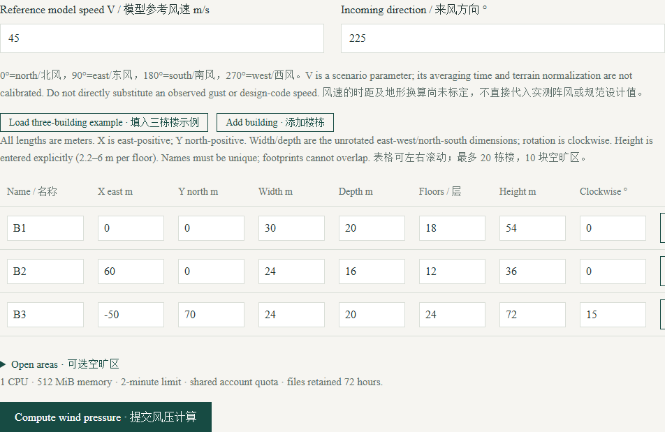
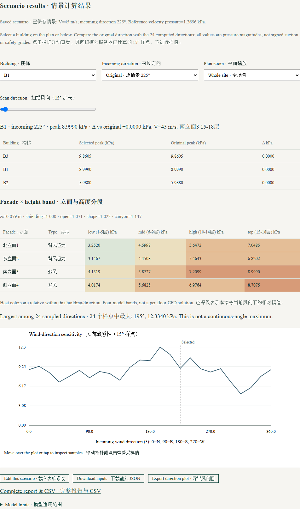

Building wind pressure · Online guide
Enter a bounded building scenario, inspect the plan, then compare directional pressure estimates. This is a screening prototype, not CFD or structural certification.
Screenshots use public teaching data or synthetic examples, without user accounts, task tokens or private research data. Select an image to enlarge it.
1. Access and task lifecycle
Sign in with an approved account. For a new account, register and verify your email; the owner must approve the application before computation is enabled.
All tools share per-account limits: one running task, two queued tasks and ten submissions per day. Results expire after 72 hours. Save results you need to keep.
2. Enter the scenario
Use the sample scenario to learn the fields, then edit wind speed/direction and building dimensions, positions, floors, height and rotation. Check units in each label.
Review open-area geometry and the plan before submitting. Avoid uploading private site data when a synthetic classroom layout is sufficient.

3. Inspect directional results
After computation, choose a building on the plan or in the selector. Move the direction slider to inspect the stored directional scan and pressure summary.
The plot, building selection and summary are linked. Return to edit inputs for a genuinely new scenario and submit again; viewing an existing direction does not run a new simulation.

Troubleshooting
Check finite positive dimensions and supported scene limits shown in the form. Save the task ID if a run fails.
These empirical screening factors do not resolve a flow field and have not been certified for engineering design. A favorable ranking is not a safety conclusion.